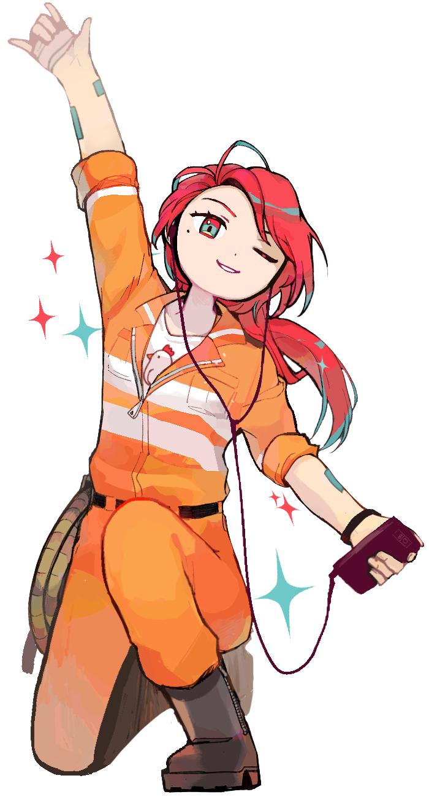

- 
-
이름복이성격- 붙임성 좋은 분위기 메이커 타입. - 좋든 나쁘든 감정이 격해지면 리액션이 크게 과장되는 편이다. 이럴 땐 곧잘 시끄러워지곤 한다… - 한 번 목표로 정한 것은 쉽게 놓지 않는 근성인. - 호기심을 참지 못하는 편.특징- 20대 중반에 키는 170 남짓. 평균 체중. - 복이가 어릴 적부터 지금의 나이가 될 때까지 운영해온 치킨집이 거의 가족 모두의 가업이나 마찬가지.- 튀김요리만큼은 최고로 잘 할 수 있다! - 오토바이 면허도 있다. 배달 도와야 하니까. - 취미가 음악과 게임인 휴학생. 원래라면 음악 쪽으로 진로를 잡을 예정이었으나…. - 스스로가 현실에 존재하는 인간이 아닌 인공지능이라는 사실에 여태까지의 기억들을 부정 당해 크게 충격을 받았지만, 지금은 인간이 아니더라도 자신을 이루는 것들이 거짓이 되지는 않는다고 생각하고 있다. - 실루엣이 게임패드 같은 모양의 VR을 착용한다. - 주로 자신의 목소리에 반응하는 파형 LED가 출력된다. - 구르트라는 이름의 연인이 있다. - 가장 좋아하는 꽃은 복수초.
ⓒ 2020 Site - Com / Illustration - AK